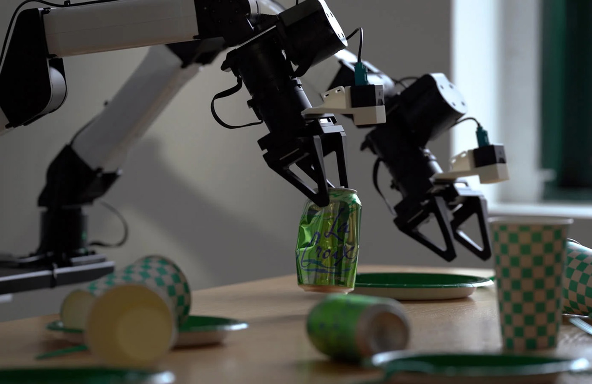

Runway, известная по видеомоделям Gen-4.5 и Act-Two, представила Praxis-1 — модель класса policy для роботов, построенную на том же масштабном видео-предобучении, что и её общие мировые модели. Идея проста: настоящих записей работы роботов мало и они дороги (телеуправление, полигоны, разметка), а вот обычного видео люди каждый день выкладывают больше, чем любой робототехнический лабораторный стенд снимет за годы. технический директор Runway Камиль Синди прямо назвал нехватку роботизированных данных главным «бутылочным горлышком» отрасли.
Компания утверждает, что симуляция политик робота внутри её модели мира коррелирует с реальными результатами на 0,95 — это дешевле и быстрее, чем методы на 3D-реконструкции сцены. В тестах дообучение на 1000 часов веб-видео дало ошибку конечной позиции 16,1 см против 16,0 см у такого же объёма телеуправляемых записей — разница в пределах погрешности. То есть коты, кухня и стройки с YouTube учат робота не хуже спецсъёмки.
Praxis-1 идёт к ранним партнёрам: Noble Machines (бимануальная манипуляция), Standard Bots (6-осевая рука RO1) и Ultra (мобильная платформа). Одна и та же политика без переобучения переносится между студией и кухней. Публичный релиз обещан «в ближайшие месяцы» — и сразу с открытыми весами: в Runway делают ставку на открытость американских физических моделей как конкурентное преимущество для производителей железа.
Практически все крупные игроки (Nvidia с GR00T, Google DeepMind с Gemini Robotics) сошлись на одном: путь к универсальному роботу лежит через видео, а не через миллионы часов телеоперации. Praxis-1 — первый случай, когда модель такого рода выходит в open-weight варианте, так что через пару месяцев любая команда с железом сможет попробовать её на своём роботе без договора с корпорацией.